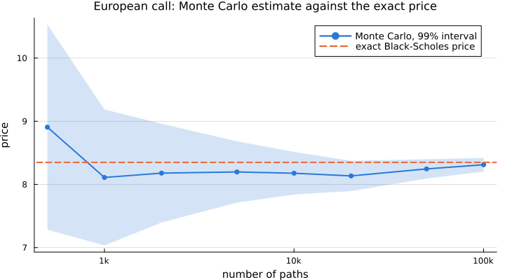
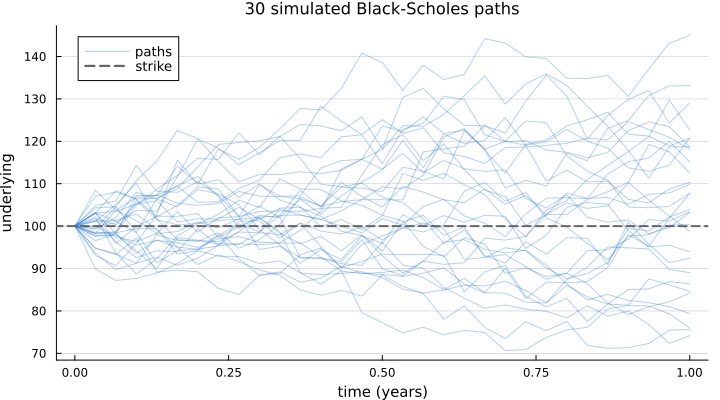

Getting started
This tutorial prices a European call under Black-Scholes and shows the handful of objects every computation in FinancialMonteCarlo.jl is made of.
Installation
The package is registered, so from the Julia REPL:
] add FinancialMonteCarlousing FinancialMonteCarloThe four ingredients
Every metric takes the same four arguments: a model, a zero rate curve, a Monte Carlo configuration and a payoff (or a collection of them).
The market data: spot price, continuous dividend yield and risk free rate.
S0 = 100.0
d = 0.01
r = 0.02
underlying = Underlying(S0, d)
rfCurve = ZeroRate(r)ZeroRate{Float64}(0.02)The model of the underlying, here Black-Scholes with 20% volatility:
model = BlackScholesProcess(0.2, underlying)BlackScholesProcess{Float64, FinancialMonteCarlo.UnderlyingScalar{Float64, Float64}}(0.2, FinancialMonteCarlo.UnderlyingScalar{Float64, Float64}(100.0, 0.01))The simulation settings: number of paths and number of time steps per path.
mcConfig = MonteCarloConfiguration(10_000, 30)MonteCarloConfiguration{Int64, Int64, FinancialMonteCarlo.StandardMC, FinancialMonteCarlo.SerialMode{Random.MersenneTwister}}(10000, 30, FinancialMonteCarlo.StandardMC(), FinancialMonteCarlo.SerialMode{Random.MersenneTwister}(0, Random.MersenneTwister(0xd3b3432609028cbde42c30f7c271058f)), true)The contract: a European call with maturity one year and strike 100.
T = 1.0
K = 100.0
euOption = EuropeanOption(T, K)EuropeanOption{Float64, Float64, Float64}(1.0, 100.0, true)Pricing
pricer(model, rfCurve, mcConfig, euOption)8.243560026581397Prices are reproducible: the configuration carries a seed, and every metric resets the random number generator before simulating.
pricer(model, rfCurve, mcConfig, euOption) == pricer(model, rfCurve, mcConfig, euOption)trueSeveral payoffs can be priced on the same simulated paths by passing a vector:
payoffs = [Forward(T), EuropeanOption(T, K), EuropeanOption(T, K, false), AmericanOption(T, K, false)]
pricer(model, rfCurve, mcConfig, payoffs)4-element Vector{Float64}:
98.78023648269446
8.243560026581397
7.483190874562468
7.5418162957802855Accuracy of the estimate
variance and confinter return the variance of the discounted payoff and a confidence interval for the price.
variance(model, rfCurve, mcConfig, euOption)177.0685193489129confinter(model, rfCurve, mcConfig, euOption, 0.99)(7.900736467534448, 8.586383585628347)Antithetic variates reduce the variance at no extra cost (the number of paths must be even):
mcAntithetic = MonteCarloConfiguration(10_000, 30, FinancialMonteCarlo.AntitheticMC())
variance(model, rfCurve, mcAntithetic, euOption)172.0054010670358The interval shrinks like one over the square root of the number of paths. Under Black-Scholes the exact price is known, so the convergence can be checked (a European payoff needs one time step):
using Plots, Distributions
default(size = (720, 400), linewidth = 2, framestyle = :axes, grid = :y, gridalpha = 0.25, titlefontsize = 11, guidefontsize = 10, legendfontsize = 9)
σ = 0.2
d1 = (log(S0 / K) + (r - d + σ^2 / 2) * T) / (σ * sqrt(T))
exact = S0 * exp(-d * T) * cdf(Normal(), d1) - K * exp(-r * T) * cdf(Normal(), d1 - σ * sqrt(T))
paths = [500, 1_000, 2_000, 5_000, 10_000, 20_000, 50_000, 100_000]
intervals = [confinter(model, rfCurve, MonteCarloConfiguration(n, 1), euOption, 0.99) for n in paths]
centres = [(lower + upper) / 2 for (lower, upper) in intervals]
plot(paths, centres; ribbon = (centres .- first.(intervals), last.(intervals) .- centres), fillalpha = 0.2, color = "#2a78d6", marker = :circle, markersize = 4, markerstrokewidth = 0, label = "Monte Carlo, 99% interval", xscale = :log10, xticks = ([1_000, 10_000, 100_000], ["1k", "10k", "100k"]), xlabel = "number of paths", ylabel = "price", title = "European call: Monte Carlo estimate against the exact price")
hline!([exact]; color = "#eb6834", linestyle = :dash, label = "exact Black-Scholes price")
Changing the model
Models are interchangeable: the same payoffs can be priced under, e.g., Heston or Kou.
heston = HestonProcess(0.2, 0.2, 0.01, 0.01, 0.0, 0.03, underlying)
kou = KouProcess(0.2, 5.0, 0.3, 30.0, 20.0, underlying)
[pricer(m, rfCurve, mcConfig, euOption) for m in (model, heston, kou)]3-element Vector{Float64}:
8.243560026581397
7.985701937317275
9.86751254145414Looking at the paths
simulate returns the simulated paths as an Nsim × (Nstep + 1) matrix, the first column being the spot.
S = simulate(model, rfCurve, mcConfig, T)
size(S)(10000, 31)The first paths, with the strike of the call:
times = range(0, T, length = size(S, 2))
plot(times, S[1:30, :]'; color = "#2a78d6", alpha = 0.35, linewidth = 1, label = ["paths" fill("", 1, 29)], legend = :topleft, xlabel = "time (years)", ylabel = "underlying", title = "30 simulated Black-Scholes paths")
hline!([K]; color = :gray40, linestyle = :dash, label = "strike")
This page was generated using Literate.jl.